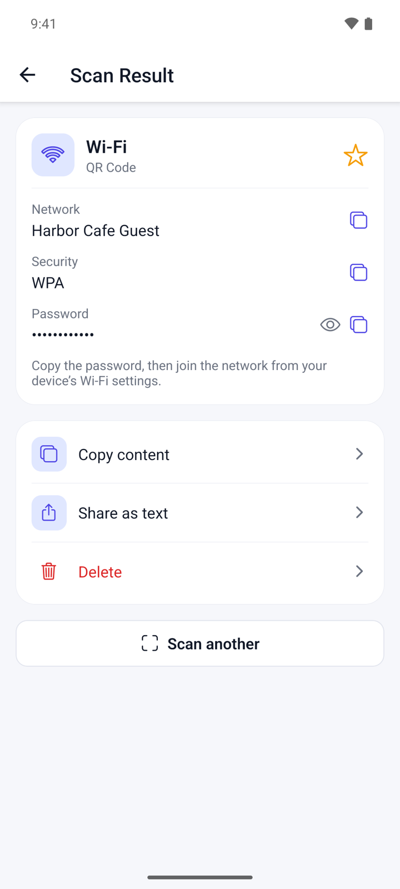

できること
QR & Barcode Toolkit は、カメラまたは写真から QRコードとバーコードを読み取り、開く前に中身を表示します。自分用の QRコードやバーコードを作って、画像として保存したり共有したりすることもできます。アプリは21言語に対応し、スマートフォンの言語設定に合わせて表示されます。
- コードは端末内で読み取ります。リンクが勝手に開くことはありません。
- アカウントは不要です。履歴はスマートフォンの中だけに保存されます。
- QRコードと、EAN-13、UPC-A、Code 128 など12種類のバーコードを読み取れます。
- 広告付きで無料です。Premium を一度購入すると、広告が消え、スタイルの選択肢が増えます。
はじめに
- QR & Barcode Toolkit を開きます。Home に、Scan QR、Scan Barcode、Create QR、Create Barcode の4つのショートカットが表示されます。
- Scan QR をタップします。初回は Allow camera をタップし、Android の確認画面でカメラを許可します。
- カメラを使いたくない場合は、Scan from an image instead をタップして写真を選びます。写真ライブラリ全体へのアクセスは必要ありません。

コードを読み取る
- 下部の Scan をタップするか、Home のスキャン用ショートカットをタップします。
- 上部で QR Code または Barcode を選びます。
- カメラをコードに向けます。バーコードは枠の中に収めてください。
- 暗い場所では、ライトのボタンをタップします。写真からコードを読み取るには、写真のボタンをタップして写真を選びます。
- コードを読み取ると Scan Result が開きます。Website、Wi-Fi、Contact、Product など、内容の種類が表示されます。
- Copy content または Share as text をタップします。カメラに戻るには Scan another をタップします。
リンクを開く前に確認する
- Web アドレスが入ったコードを読み取ります。結果にサイト名と完全なアドレスが表示されます。
- 警告が出ている場合は内容を読みます。暗号化されていない（http）リンク、短縮リンク、IPアドレス直書きのリンク、隠されたログイン情報、紛らわしい文字を使ったリンクについて警告します。
- 信頼できるサイトの場合だけ Open link をタップし、確認画面で Open をタップします。

ほかの種類のコードには、それぞれ専用のボタンがあります。Compose email、Call、Send message、Open in Maps、Search the web です。どのボタンも、アプリを離れる前に確認を求めます。
Wi-Fi のコードを読み取る
- Wi-Fi の QRコードを読み取ります。結果に Network、Security、Password が表示されます。
- 目のアイコンをタップすると、パスワードが表示されます。
- パスワードの横にあるコピーのアイコンをタップします。
- スマートフォンの Wi-Fi 設定を開き、コピーしたパスワードでネットワークに接続します。アプリが代わりに接続することはありません。

QRコードを作る
- Create をタップし、QR Code を選びます。
- Content type で、Website、Text、Wi-Fi、Email、Phone、SMS、Contact、Location のいずれかを選びます。
- 項目を入力します。入力内容が正しければ、すぐに QRコードが表示されます。履歴で名前を付けたいときは Title (optional) に入力します。
- Style でテンプレート（Classic、Indigo、Forest）を選びます。Foreground と Background の色や、Error correction のレベルも変更できます。
- 保存するには Save to history、画像を送るには Share、ギャラリーに保存するには Save image をタップします。

鍵のマークが付いた項目は Premium の機能です。
バーコードを作る
- Create をタップし、Barcode を選びます。
- Format で、EAN-13、EAN-8、UPC-A、Code 128、Code 39、ITF-14 のいずれかを選びます。
- Value を入力します。入力欄の下の行に、その形式で使える内容が表示されます。商品コードの場合、チェックディジットを省略するとアプリが自動で追加します。
- 名前を付けたいときは Title (optional) に入力します。
- Save to history、Share、Save image のいずれかをタップします。

コードを探す・再利用する・削除する
- History をタップします。読み取ったコードと作成したコードが一覧で表示されます。
- Search に入力するか、All、Scanned、Created、Favorites、Any type、QR、Barcode で絞り込みます。
- 行の星をタップすると、お気に入りに追加されます。
- 行をタップすると Details が開きます。ここから Copy content、Share as text、Delete を選べます。QRコードと、アプリで作成できる形式のバーコードでは、コードが表示され、Share image と Edit / reuse も使えます。
- 一覧を空にするには、上部のゴミ箱のアイコンをタップし、Clear をタップします。お気に入りは残ります。
設定を変更する
- Settings をタップします。
- 読み取りを保存したくない場合は、Save scans to history をオフにします。
- Haptic feedback のオン・オフを切り替えます。
- Wi-Fi のパスワードを保存したい場合だけ、Keep Wi-Fi passwords in history をオンにします。初期設定ではオフです。
- Language をタップして、アプリの言語を選びます。初期設定では、スマートフォンの言語に合わせて表示されます。
- Clear all history をタップし、続けて Delete all をタップすると、お気に入りを含むすべての読み取り履歴と作成したコードが削除されます。
Premium
Premium は買い切りで、サブスクリプションではありません。Settings を開いて Go Premium をタップするか、Home の See plans をタップします。次の機能が使えるようになります。
- 広告なし。
- 好きな色、Premium テンプレート、QRコードへのロゴ追加。
- 履歴とお気に入りの数が無制限。
- 1024 px と 2048 px での書き出し。
Premium なしでも、鍵付きのテンプレート、色、Add logo をタップすると Watch an ad が表示されることがあります。これを選ぶと、アプリを閉じるまでこれらのスタイルが使えます。以前に Premium を購入している場合は、Settings の Restore purchases をタップしてください。
よくある質問
アプリがリンクを勝手に開くことはありますか？ ありません。先にアドレスと警告が表示されます。Open link をタップして確認したときだけ、リンクが開きます。
どんなコードを読み取れますか？ QR、EAN-13、EAN-8、UPC-A、UPC-E、Code 128、Code 39、Code 93、Codabar、ITF-14、PDF417、Data Matrix、Aztec です。
履歴に Wi-Fi のパスワードが残っていないのはなぜですか？ Wi-Fi のパスワードは、コードを保存する前に取り除かれます。保存したい場合は、コードを読み取る前、または作成する前に、Settings で Keep Wi-Fi passwords in history をオンにしてください。
コードは何件まで保存されますか？ 無料版では、最新の読み取り100件と作成したコード100件、お気に入り10件まで保存されます。無料の一覧がいっぱいになると History でお知らせし、新しい項目が古い項目と入れ替わります。お気に入りは、一覧がいっぱいになっても削除されません。Premium には上限がありません。
ダークモードはありますか？ あります。スマートフォンのライトテーマ・ダークテーマに合わせて表示されます。
プライバシー
コードは端末内で読み取られ、履歴はスマートフォンの中だけに保存されます。無料版では Google AdMob の広告が表示されます。詳しくはプライバシーポリシーをご覧ください。